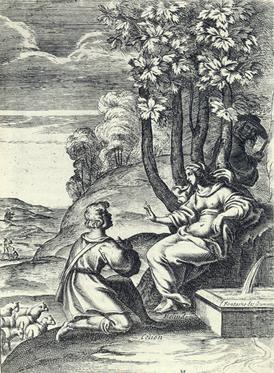
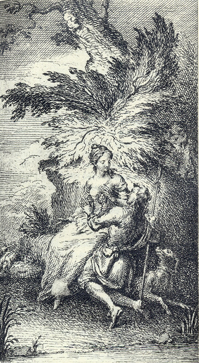

L'Astrée
d'Honoré d'Urfé
Première partie
Livre 10

Gravure signée M(ichel Lasne))
Près de la fontaine des sycomores, Bellinde repousse Celion, Ergaste les épie
Au deuxième plan, un troupeau de moutons (I, 10, 345 recto)
L'AstréeI, 10. Édition Vaganay**, 192.Gravure signée M(ichel Lasne))
Près de la fontaine des sycomores, Bellinde repousse Celion, Ergaste les épie
Au deuxième plan, un troupeau de moutons (I, 10, 345 recto)
(Voir Illustrations)

L'AstréeI, 10. Édition Vaganay**, 1925
Bellinde et Celion s'entretiennent. Ergaste caché les épie (I, 10, 345 recto)
Bellinde et Celion s'entretiennent. Ergaste caché les épie (I, 10, 345 recto)
(Voir Illustrations)
Édition de 1607, 407 recto (sic pour 307 recto).
Édition de Vaganay, p. 369.
Histoire de
Léonide
Stances
d'une Dame en
dévotion
η
Sois père, disait-elle, et non juge en courroux,
Puisque tu veux, ô Dieu, que père l'on t'appelle.
Sois ma Dame, disais-je, et non pas si cruelle,
Puisque tant de beauté te rend Dame de tous.
Regarde ta bonté plutôt que ta rigueur,
Quand tu veux châtier, disait-elle, une offense.
Et moi je lui disais : - Et toi, de même, pense
Qu'à tes yeux tant humains doit ressembler ton cœur.
Souviens-toi, disait-elle, ô grand Dieu, que je suis
À toi dès ma naissance et que toi seul j'adore.
- Et moi, je suis à toi, lui disais-je, et encore
Que toi seule en mes vœux adorer je ne puis.
Mesure, disait-elle, à l'Amour ta pitié.
Et lors elle tranchait pour un temps son murmure.
Et moi je lui disais : - Et toi, belle, mesure
Ta pitié non à moi mais à mon amitié.
Ses vœux furent reçus, et les miens repoussés,
Et toutefois les miens avaient bien plus de zèle,
Car de la seule foi les siens naissaient en elle,
Moi je voyais la sainte où les miens sont dressés.
Elle obtint le pardon (mais qui peut refuser,
Chose qu'elle demande ?) et j'en portai la peine,
Car depuis, s'éloignant de toute chose humaine,
Elle ne me vit plus que pour me mépriser.
Est-ce ainsi, dis-je alors, que t'ayant fait merci,
Si j'avais mérité un traitement si rude que celui
que je reçois de vous, j'élirais plutôt la mort
que de le souffrir ; mais puisque c'est pour votre
contentement, je le reçois avec un peu plus de
plaisir que si en échange vous m'ordonniez la mort ;
toutefois, puisque je me suis tout donné à vous,
il est raisonnable que vous en puissiez absolument disposer. J' essayerai donc de vous obéir,
mais ressouvenez-vous qu'aussi longtemps que durera
cette contrainte, autant faudra-t-il rayer des
jours de ma vie, car je ne nommerai jamais vie
ce qui rapporte plus de douleur que la mort ;
abrégez-le donc, rigoureuse Bergère, s'il y a
encore en vous une seule étincelle, non pas
d'amitié, mais de pitié seulement.
lui pussent faire. Il vécut de cette sorte * plusieurs jours, durant lesquels il faisait même pitié aux rochers, et afin que celle qui était cause de son mal en ressentît quelque chose, il lui envoya ces vers :
Et au bas de la lettre, il y avait ces vers :
η
Stance.
COMPARAISON D'UNE FONTAINE
À SON
DÉPLAISIR
cette
source éternelle
Qui ne finit jamais
Mais qui se renouvelle
Par des flots plus épais
Ressemble à ces ennuis dont le regret m'oppresse.
Car comme elle, sans cesse,
D'une source féconde, au malheur que je sens,
Ils s'en vont renaissant.
Puis * d'une longue course,
Tout ainsi que ces flots,
Vont éloignant leur source,
Plainte
η

Livre 9

Livre 11
Référence électronique :
document.write('"'+document.title.substr(0, document.title.indexOf("-")-1)+'". '+"Dernière mise à jour : "+ExtractDate(document.lastModified)+".")Deux visages de L'Astrée.
©2005-2020 E. Henein.
URL :
var today = new Date();
document.write(document.URL +
"<br>Consulté le : " + today.toLocaleDateString("fr-FR") + ".");
var _gaq = _gaq || [];
_gaq.push(['_setAccount', 'UA-19288475-1']);
_gaq.push(['_trackPageview']);
(function() {
var ga = document.createElement('script'); ga.type = 'text/javascript'; ga.async = true;
ga.src = ('https:' == document.location.protocol ? 'https://ssl' : 'http://www') + '.google-analytics.com/ga.js';
var s = document.getElementsByTagName('script')[0]; s.parentNode.insertBefore(ga, s);
})();
Deux visages de L'Astrée.
©2005-2019 Eglal Henein. Creative Commons 4 
Édition critique de la première partie de L'Astrée (1607, 1621)
mise en ligne le 9 avril 2007
Édition critique de la deuxième partie de L'Astrée (1610, 1621)
mise en ligne le 10 octobre 2010
Édition critique de la troisième partie de L'Astrée (1619, 1621)
mise en ligne le 1er novembre 2014
Édition critique de la quatrième partie de L'Astrée (1624)
mise en ligne le 15 janvier 2019
document.write("Dernière mise à jour : "+ExtractDate(document.lastModified))